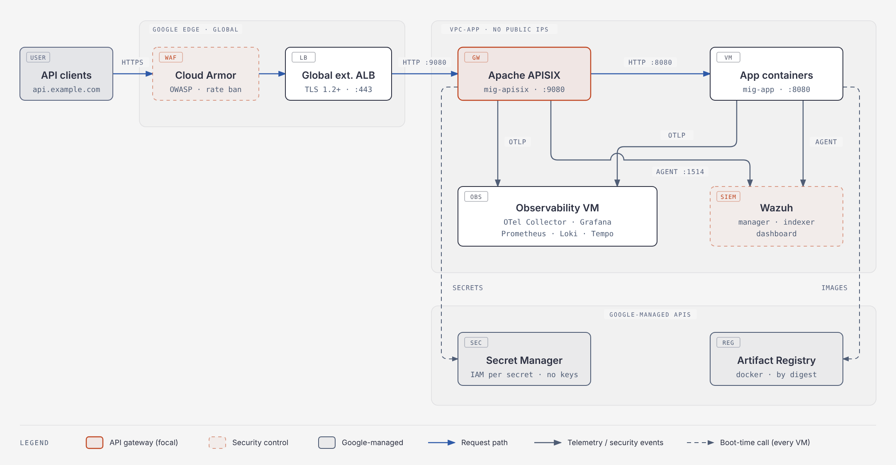
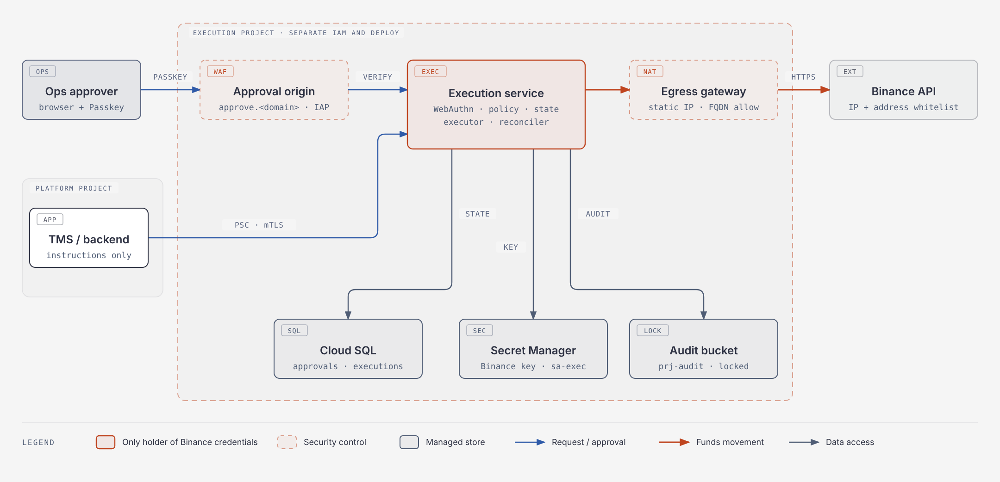

v2 keeps the v1 platform unchanged and adds a Binance execution service in its own GCP project, so that compromising the main application, its load balancer or its GCP project is not enough to move funds. The service is the only holder of the Binance funding credentials. It executes a payment only after it has itself verified ops Passkey approvals bound to the exact, immutable payment instruction.
What v2 adds over v1
approve.<domain>), served from inside that project.Scope: one region; the main platform as in v1; Binance funding operations (withdrawals and, if approved, internal transfers) moved out of the main backend.
Assumptions (change these if they don't hold):
asia-southeast1 (Singapore) or asia-southeast2 (Jakarta), chosen for data residency.api.<domain>) and a separate one for approvals (approve.<domain>).Key design decisions
| Decision | Choice | Why |
|---|---|---|
| Edge load balancer (main app) | Global external Application LB (EXTERNAL_MANAGED) |
Cloud Armor, Adaptive Protection and Google-managed certificates at the global edge |
| WAF | Cloud Armor backend security policies | OWASP preconfigured rules, rate limiting, geo and IP rules |
| API gateway | Apache APISIX in Docker on VMs, standalone mode | Runs inside the VPC; config versioned in Git and shipped by CI |
| Gateway to app | APISIX upstream lists the app VMs' fixed internal IPs, with active health checks | No internal LB to operate |
| Observability | OpenTelemetry → Prometheus, Loki, Tempo, Grafana | One pipeline for metrics, logs and traces |
| Security monitoring | Wazuh with an agent on every VM | Host intrusion detection, FIM, CIS checks, vulnerability detection, SIEM |
| Funds movement | Dedicated execution service in a separate GCP project | Only this service can reach Binance credentials; main-app compromise alone cannot move funds |
| Approval | WebAuthn challenge = hash of the canonical instruction + single-use nonce, verified by the execution service | Approval covers the exact transaction; no trust in an "approved" flag from TMS |
| Approval UI | Own origin, own LB and Cloud Armor policy in the execution project | The screen ops trust cannot be swapped by whoever controls the main LB or APISIX |
| Execution safety | Postgres state machine with a unique payment UUID, atomic reservation, reconciliation before retry | No duplicate or blind re-sent transfers |
| Credentials | Binance key in the execution project's Secret Manager; Binance-side IP whitelist + withdrawal address whitelist | A stolen key is useless outside the static egress IP and allowlisted addresses |
| Audit | Append-only Cloud Storage bucket with locked retention, in a separate audit project | Execution and ops admins cannot alter records |
| Deploy and policy changes | Separate pipeline; production deploys and policy changes need your approval | Build jobs never see production credentials |
| Secrets (platform) | Secret Manager, fetched at boot by each VM's service account | No key files on disk |
| Admin access | IAP for SSH and admin UIs; OS Login | No bastion, no admin UI on the internet |
The platform is drawn first, unchanged from v1; the second diagram shows the new execution project and everything that crosses its boundary.
prj-platform)
Request path. Client → HTTPS 443 on the global LB → Cloud Armor → APISIX on 9080 → app VMs on 10.10.2.11–.13:8080. Telemetry goes over OTLP to the observability VM; security events go to Wazuh on 1514. Cloud NAT and IAP are not drawn.
prj-exec, new in v2)
What crosses the boundary: TMS sends instructions in and reads status (PSC, mTLS); ops browsers reach only the approval origin (IAP + Cloud Armor); the only outbound path for funds is the static-IP egress gateway to Binance. Telemetry and Wazuh events leave through two outbound-only PSC endpoints (not drawn). The audit bucket sits in prj-audit; the execution service can only add objects to it.
The platform components are unchanged from v1; the second table lists what v2 adds in prj-exec and prj-audit.
Platform (prj-platform, as v1)
| Component | GCP resource | Configuration |
|---|---|---|
| Public IP + TLS | Global static IP, Google-managed certificate | HTTPS 443 only; HTTP redirects to HTTPS; SSL policy MODERN, min TLS 1.2 |
| Edge LB | Global external Application LB | Backend be-apisix → gateway MIG on http:9080; health check /healthz; logging on |
| WAF | Cloud Armor policy waf-edge |
Attached to be-apisix |
| API gateway | Regional MIG mig-apisix, 2+ VMs |
APISIX in Docker, standalone mode; jwt-auth/openid-connect, limit-count, cors, request-id, prometheus, opentelemetry |
| Application (incl. TMS) | Stateful regional MIG mig-app, fixed IPs 10.10.2.11–.13 |
Docker; image by digest; APISIX upstream with active health checks. No Binance credentials or Binance code after cutover |
| Observability | vm-obs in snet-ops |
OTel Collector gateway, Prometheus, Loki, Tempo, Grafana |
| Telemetry agent | OTel Collector on every VM | OTLP, host and Docker metrics, Docker logs |
| SIEM / HIDS | vm-wazuh in snet-ops |
Manager, indexer, dashboard; agents everywhere; Pub/Sub feed of Cloud Logging |
| Secrets | Secret Manager | One secret per credential; accessor IAM per secret |
| Images | Artifact Registry | Reader per VM service account |
| Egress | Cloud NAT | Outbound for VMs without public IPs |
Execution (prj-exec, prj-audit, new in v2)
| Component | GCP resource | Configuration |
|---|---|---|
| Execution service | Regional MIG mig-exec, 2 VMs, fixed size, in vpc-exec |
One container: internal API, approval UI, WebAuthn verifier, policy engine, executor, reconciliation worker. Runs as non-root, read-only filesystem |
| Approval origin | Own global external Application LB, certificate for approve.<domain>, Cloud Armor policy waf-approve, IAP |
Ops IP allowlist + OWASP rules; IAP limited to the ops group; only /i/* routes |
| Internal API endpoint | Private Service Connect service attachment (exec) + PSC endpoint in vpc-app |
TMS calls a private IP; mTLS with a client certificate issued to TMS |
| Execution database | Cloud SQL for PostgreSQL, private IP only, HA, CMEK optional | Instructions, approvals, challenges, executions, approvers; point-in-time recovery on |
| Binance credentials | Secret Manager in prj-exec |
Only sa-exec can access; Binance-side IP whitelist and withdrawal address whitelist |
| Egress gateway | Cloud NAT with one reserved static IP, plus Cloud NGFW FQDN egress rules (or Secure Web Proxy) | Only Binance API hostnames, Google APIs through Private Google Access, and the Wazuh/OTel endpoints over PSC |
| Audit store | Cloud Storage bucket in prj-audit with a locked retention policy |
Append-only per-event objects with a hash chain |
| Exec registry and deploy | Artifact Registry + Cloud Deploy in prj-exec |
Signed images; production stage needs your approval |
VM image. One Ubuntu LTS golden image with Docker, the OTel Collector and the Wazuh agent. Execution VMs use a separate hardened variant: no compilers or debug tools, Wazuh active response off.
Why APISIX standalone. APISIX reads routes from conf/apisix.yaml and has no Admin API, so there is no etcd and no admin port to protect. Changes ship through CI.
Scaling the app tier. The stateful MIG cannot autoscale; adding capacity means a VM with the next fixed IP plus the new node in apisix.yaml in one CI change.
The execution service turns an immutable payment instruction plus verified Passkey approvals into exactly one Binance request, and nothing else can reach the Binance credentials.
| Project | Holds | Who has IAM roles |
|---|---|---|
prj-platform |
Everything from v1: LB, APISIX, app, TMS, observability, Wazuh | Platform team, sa-deployer |
prj-exec |
Execution VMs, approval LB + Cloud Armor, Cloud SQL, Binance secret, egress gateway, exec Artifact Registry | You (break-glass), sa-exec, sa-exec-deployer. No platform roles at all |
prj-audit |
Locked audit bucket | You; sa-exec may only create objects |
Put prj-exec and prj-audit in their own folder with organization policies: no service-account key creation, no external IPs on VMs, restricted resource locations.
Every execution-relevant field is part of the instruction, and the instruction never changes after creation. A change in TMS creates a new version, which voids all approvals of the old one.
| Field | Example | Rule |
|---|---|---|
tms_payment_uuid |
3f6c…e1 |
From TMS; unique across all executions |
version |
1 |
Integer, +1 on any change |
operation |
WITHDRAW |
From the policy's allowed list |
source_account |
binance-main |
Logical name mapped to one Binance account in policy |
asset |
USDT |
Upper case |
amount |
"1250.5" |
Canonical decimal string: no exponent, no leading + or zeros, no trailing fractional zeros, scale ≤ asset precision |
beneficiary_address |
T… |
Exactly as validated for the network; compared byte for byte |
network |
TRX |
Binance network code |
memo |
"" |
Empty string when not applicable, never absent |
environment |
prod |
Approval invalid in any other environment |
service_id |
binance-exec |
Approval invalid for any other service |
Each approval adds its own fields: approval_nonce (32 random bytes, base64url), approval_expires_at (now + 5 minutes, RFC 3339 UTC), operator_id, instruction_hash.
Serialization: JSON Canonicalization Scheme (RFC 8785), UTF-8, all fields present, strings only for amounts. instruction_hash = SHA-256(canonical(instruction)). The WebAuthn challenge is SHA-256(canonical(approval_request)), where the approval request contains instruction_hash plus the approval fields above.
POST /v1/instructions over Private Service Connect with mTLS. The service validates fields and policy, stores the instruction and its hash, state PENDING_APPROVAL, and returns the id and hash.https://approve.<domain>/i/<id>. IAP checks their Google identity and ops group; the page is rendered by the execution service from its own stored instruction, never from TMS data.navigator.credentials.get with that challenge, rpId = approve.<domain>, userVerification: "required", and only that operator's credential IDs.clientDataJSON.type = webauthn.get, challenge matches, origin is exactly https://approve.<domain>;
- rpIdHash, user-present and user-verified flags, signature against the stored public key, sign counter increasing when non-zero;
- the credential belongs to an active operator whose role allows this operation and amount;
- the instruction is still PENDING_APPROVAL at the same version and hash.APPROVED.RESERVED only if the row is APPROVED and no other execution exists for that payment UUID, re-checks daily limits, writes SENDING durably, then calls Binance with withdrawOrderId = tms_payment_uuid (check Binance's length limit).CONFIRMED, FAILED (Binance rejected before acceptance) or UNKNOWN (timeout, 5xx, connection reset). TMS reads GET /v1/instructions/<id>.The main backend has no way to say "approved": the API has no such field, and execution starts only from approvals the service verified itself.
Policy is a YAML file in the execution repo, changed only through your approved pipeline, loaded read-only at start, and its version recorded on every decision.
| Rule | Starting point |
|---|---|
| Allowed operations | WITHDRAW only; add internal transfers explicitly if needed |
| Source accounts | Named list, each mapped to one Binance sub-account |
| Destinations | Allowlist of address + network + memo; mirrored in Binance's withdrawal whitelist |
| Per-transaction limit | Per asset, e.g. USDT 50,000 |
| Daily limit | Per asset and source account, counted over RESERVED, SENDING, UNKNOWN, CONFIRMED |
| Dual approval | Above a per-asset threshold, two distinct operators on the same instruction version |
| Approval TTL | 5 minutes per challenge; instruction expires after 24 hours unapproved |
PENDING_APPROVAL → APPROVED → RESERVED → SENDING → CONFIRMED | FAILED | UNKNOWN, plus EXPIRED, SUPERSEDED (new version) and MANUAL_REVIEW.
executions.tms_payment_uuid has a unique constraint; reservation is UPDATE … SET state='RESERVED' WHERE id=$1 AND state='APPROVED' checked for one affected row.approvals is unique on (instruction_id, version, operator_id); challenges are consumed with UPDATE … SET used_at=now() WHERE id=$1 AND used_at IS NULL AND expires_at > now().SENDING or UNKNOWN and queries Binance withdrawal history by withdrawOrderId.CONFIRMED or FAILED. Not found after a 15-minute window → MANUAL_REVIEW. A resend then needs a new instruction version and fresh approvals; the service never resends automatically.SENDING" and "record response" therefore always ends in reconciliation, never a blind resend.| Surface | Endpoints | Caller |
|---|---|---|
| Internal (PSC + mTLS) | POST /v1/instructions, GET /v1/instructions/{id} |
TMS / main backend only |
| Approval origin | GET /i/{id}, POST /i/{id}/challenge, POST /i/{id}/assert |
Ops browsers through IAP |
| Admin | Enrol, revoke, change role | You, through IAP on a separate port; never public |
| Outbound | Fixed list of Binance endpoints, hardcoded base URL | Execution service only |
No pass-through endpoints, no caller-supplied URLs, no generic Binance proxy.
approve.<domain> with user verification required. New approvers and role changes take effect after 24 hours and notify all existing approvers.prj-exec secrets; sign the image with Cosign; push to the exec Artifact Registry.prj-exec whose production stage requires approval; only you hold roles/clouddeploy.approver.gs://<audit-bucket> in prj-audit before the next state change. The bucket has a locked retention policy; sa-exec has only storage.objectCreator. Each record carries the hash of the previous one, so gaps and edits are detectable.| Must reject or survive | Test | Expected |
|---|---|---|
| Modified details after approval | Change amount in TMS after approval | New version; old approvals void; nothing sent |
| Expired approval | Sign after 5 minutes | Rejected, audited |
| Replayed approval | Resend a valid assertion | Rejected: challenge already used |
| Unauthorized approval | Revoked operator, or role below amount | Rejected |
| Duplicate or concurrent execution | Two executors and repeated calls on one payment UUID | Exactly one Binance request |
| Threshold bypass | Above-threshold payment approved once, or twice by one operator | Stays PENDING_APPROVAL |
| Policy limit | Amount above per-transaction or daily limit, or non-allowlisted address | Rejected at create and again at reserve |
| Approval flag only | Backend sends approved=true |
Rejected: unknown field, no execution |
| Timeout | Binance mock delays past client timeout, then accepts | UNKNOWN → reconciled to CONFIRMED; no second request |
| Restart | Kill the service after SENDING |
On restart reconciled; no resend |
One OpenTelemetry pipeline carries all three signals to self-hosted backends, and Wazuh watches every host, including the execution VMs; both stacks live in snet-ops, and execution VMs reach them only through two Private Service Connect endpoints.
| Signal | Source | Collected by | Stored in | Retention (starting point) |
|---|---|---|---|---|
| Traces | APISIX opentelemetry plugin, app OTel SDK, execution service OTel SDK |
OTLP → local collector → gateway collector (tail sampling: keep errors + slow, 10% of the rest) | Tempo, GCS bucket PROJECT-tempo |
14 days |
| Metrics | APISIX prometheus plugin, app and execution /metrics, hostmetrics, docker_stats |
Local collector scrapes → gateway collector → Prometheus remote write | Prometheus, SSD persistent disk | 30 days |
| Logs | Docker JSON logs, syslog | Local collector filelog → gateway collector → Loki OTLP endpoint |
Loki, GCS bucket PROJECT-loki |
30 days |
| Cloud logs | LB, Cloud Armor, audit logs (both projects) | Cloud Logging; Grafana's Google Cloud Logging data source | Cloud Logging | per log bucket |
| Security events | Wazuh agents; Cloud Logging of both projects via Pub/Sub | Wazuh manager | Wazuh indexer | 90 days hot, then snapshot to GCS |
| Execution audit | Execution service | Written directly by the service | Locked bucket in prj-audit (system of record); redacted copy in Loki and Wazuh |
Per your audit requirement, e.g. 7 years |
APISIX writes the trace ID into its access log (opentelemetry plugin with set_ngx_var: true), so Grafana jumps from a Tempo trace to its Loki log lines and back.
Execution service telemetry rules: never log or trace request bodies to Binance, signatures, API keys, WebAuthn assertions or full addresses (log the instruction hash and a masked address). Spans carry the instruction id, state and policy decision only.
vm-obs)otel-collector-contrib, prometheus (with --web.enable-remote-write-receiver), loki (GCS backend), tempo (GCS backend, metrics-generator) and grafana.gcloud compute start-iap-tunnel vm-obs 3000 --local-host-port=localhost:3000.prj-exec.vm-wazuh)wazuh-docker single-node deployment. Start at 4 vCPU / 16 GB RAM and a 200 GB SSD disk. Set vm.max_map_count=262144 for the indexer.wazuh-enrollment-password from Secret Manager; manager 10.10.3.20, ports 1515 and 1514. Execution VMs reach the manager through their own PSC endpoint and use a separate enrolment password stored in prj-exec./etc, /opt/apisix, /opt/exec, Docker configs; SCA with the CIS Ubuntu benchmark; vulnerability detection; Docker listener; log analysis.w``azuh_command.remote_commands=0 and sca.remote_commands=0 in local_internal_options.conf), so a compromised Wazuh manager cannot run commands there.gcp-pubsub module pulls with the one keyed service account (subscriber-only, key in Secret Manager, rotated every 90 days).UNKNOWN or MANUAL_REVIEW, rejected approvals above 3 in 10 minutes, any Secret Manager access to the Binance secret by an identity other than sa-exec.Two VPCs with no peering and no shared routes: vpc-app (v1) and vpc-exec (v2). They connect only through three Private Service Connect endpoints, each a single IP and port.
| VPC | Subnet | Example CIDR | Purpose |
|---|---|---|---|
vpc-app |
snet-gateway |
10.10.1.0/24 | APISIX VMs |
vpc-app |
snet-app |
10.10.2.0/24 | App and TMS VMs at fixed IPs; PSC endpoint to exec API at 10.10.2.50 |
vpc-app |
snet-ops |
10.10.3.0/24 | vm-obs (.10), vm-wazuh (.20), internal NLBs for the two PSC services published to exec |
vpc-app |
snet-ops-psc |
10.10.9.0/28 | PSC NAT subnet for the obs and Wazuh service attachments |
vpc-exec |
snet-exec |
10.20.1.0/24 | Execution VMs, internal NLB for the exec API service attachment, PSC endpoints to OTel (10.20.1.60) and Wazuh (10.20.1.61) |
vpc-exec |
snet-exec-psc |
10.20.9.0/28 | PSC NAT subnet for the exec service attachment |
vpc-exec |
Cloud SQL private services range | 10.20.16.0/20 | Cloud SQL private IP |
Private Service Connect
| Direction | Consumer endpoint | Producer | Port | Accepts |
|---|---|---|---|---|
| TMS → execution API | 10.10.2.50 in vpc-app |
Service attachment on exec internal NLB | tcp:8443 (mTLS) | prj-platform only |
| Exec → OTel gateway | 10.20.1.60 in vpc-exec |
Service attachment on NLB in front of vm-obs |
tcp:4317 | prj-exec only |
| Exec → Wazuh manager | 10.20.1.61 in vpc-exec |
Service attachment on NLB in front of vm-wazuh |
tcp:1514, 1515 | prj-exec only |
Firewall rules, vpc-app (as v1, plus the PSC sources):
| Name | Source | Target | Port |
|---|---|---|---|
allow-glb-to-apisix |
35.191.0.0/16, 130.211.0.0/22 | sa-apisix |
tcp:9080 |
allow-apisix-to-app |
sa-apisix |
sa-app |
tcp:8080 |
allow-hc-to-app |
35.191.0.0/16, 130.211.0.0/22 | sa-app |
tcp:8080 |
allow-otlp-to-obs |
sa-apisix, sa-app, sa-wazuh; 10.10.9.0/28 (PSC NAT) |
sa-obs |
tcp:4317, 4318 |
allow-agents-to-wazuh |
sa-apisix, sa-app, sa-obs; 10.10.9.0/28 (PSC NAT) |
sa-wazuh |
tcp:1514, 1515 |
allow-iap-admin |
35.235.240.0/20 | all VMs | tcp:22; tcp:3000 on sa-obs; tcp:443 on sa-wazuh |
deny-all-ingress |
0.0.0.0/0 | all | all, lowest priority |
Firewall rules, vpc-exec (deny by default in both directions):
| Name | Direction | Source / destination | Target | Port |
|---|---|---|---|---|
allow-glb-to-exec-ui |
Ingress | 35.191.0.0/16, 130.211.0.0/22 | sa-exec |
tcp:8080 (approval UI) |
allow-psc-to-exec-api |
Ingress | 10.20.9.0/28 (PSC NAT) | sa-exec |
tcp:8443 |
allow-hc-to-exec |
Ingress | 35.191.0.0/16, 130.211.0.0/22 | sa-exec |
tcp:8080, 8443 |
allow-iap-ssh-exec |
Ingress | 35.235.240.0/20 | sa-exec |
tcp:22 (break-glass; IAP role held by you only) |
deny-all-ingress |
Ingress | 0.0.0.0/0 | all | all |
allow-egress-binance |
Egress | FQDN objects for the Binance API hostnames you use | sa-exec |
tcp:443 |
allow-egress-google-apis |
Egress | private.googleapis.com (199.36.153.8/30) |
sa-exec |
tcp:443 |
allow-egress-internal |
Egress | 10.20.1.60, 10.20.1.61, Cloud SQL range | sa-exec |
tcp:4317, 1514, 1515, 5432 |
deny-all-egress |
Egress | 0.0.0.0/0 | all | all, lowest priority |
FQDN egress objects need a Cloud NGFW network firewall policy. If you prefer an explicit proxy, Secure Web Proxy with a hostname allowlist gives the same result.
Egress IP. vpc-exec has its own Cloud NAT with one manually reserved static IP. Register that IP in the Binance API key's IP whitelist; a stolen key then fails from anywhere else.
Target rules by service account, not network tag: only users with iam.serviceAccountUser can attach a service account.
Security is layered: Cloud Armor filters at Google's edge, APISIX authenticates and throttles per consumer, IAM limits each VM to the secrets and images it needs, and fund movement sits behind a separate project boundary that only you administer.
waf-edge (main API)Start every WAF rule in preview mode for about a week, review the logs for false positives, then switch to enforce.
| Priority | Rule | Action |
|---|---|---|
| 100 | Allowlist: office / partner CIDRs (optional) | allow |
| 200 | Denylist: known bad IPs, or geo block with origin.region_code |
deny(403) |
| 1000 | evaluatePreconfiguredWaf('sqli-v33-stable', {'sensitivity': 1}) |
deny(403) |
| 1010 | xss-v33-stable |
deny(403) |
| 1020 | lfi-v33-stable, rfi-v33-stable |
deny(403) |
| 1030 | rce-v33-stable |
deny(403) |
| 1040 | methodenforcement-v33-stable, protocolattack-v33-stable |
deny(403) |
| 1050 | scannerdetection-v33-stable, sessionfixation-v33-stable |
deny(403) |
| 2000 | Rate-based ban per client IP (for example 600 requests / 60 s, ban 300 s) | rate_based_ban, 429 |
| 2147483647 | Default | allow |
Also turn on Adaptive Protection and set --json-parsing=STANDARD. Begin at sensitivity 1 and raise it only after tuning.
waf-approve (approval origin)| Priority | Rule | Action |
|---|---|---|
| 50–90 | The same preconfigured WAF rules as waf-edge, enforced from day one |
deny(403) |
| 100 | Source IP in the ops allowlist (inIpRange(origin.ip, '…')), rate limited to 60 requests / 60 s per IP |
throttle: conform = allow, exceed = deny(429) |
| 2147483647 | Default | deny(403) |
IAP on the approval backend adds a Google identity check for the ops group before the page loads; the Passkey assertion is then the approval itself.
MODERN, minimum TLS 1.2, HSTS on approve.<domain>.prj-exec).sslmode=verify-full or the Cloud SQL Auth Proxy.| Service account | Project | Roles (granted on the narrowest resource) |
|---|---|---|
sa-apisix |
platform | secretmanager.secretAccessor on gateway secrets + wazuh-enrollment-password; artifactregistry.reader; storage.objectViewer on the config bucket |
sa-app |
platform | secretmanager.secretAccessor on app secrets + wazuh-enrollment-password; artifactregistry.reader. No Binance secret |
sa-obs |
platform | storage.objectAdmin on Loki and Tempo buckets; Grafana secrets; monitoring.viewer, logging.viewer |
sa-wazuh |
platform | Wazuh secrets; storage.objectAdmin on the Wazuh snapshot bucket |
sa-wazuh-pubsub (keyed) |
platform | pubsub.subscriber on the Wazuh subscription only |
sa-deployer |
platform | compute.instanceAdmin.v1, iam.serviceAccountUser on platform VM accounts, artifactregistry.writer. No role in prj-exec |
sa-exec |
exec | secretmanager.secretAccessor on binance-api-key, binance-api-secret, exec-mtls-key, exec Wazuh password; cloudsql.client; artifactregistry.reader on the exec repo; storage.objectCreator on the audit bucket only |
sa-exec-deployer |
exec | clouddeploy.releaser, compute.instanceAdmin.v1 on mig-exec, iam.serviceAccountUser on sa-exec, artifactregistry.writer on the exec repo. No Secret Manager access |
| You | exec, audit | Owner through a break-glass group with MFA; clouddeploy.approver; IAP access to the admin UI |
No service-account key files except the Wazuh Pub/Sub reader. Organization policy iam.disableServiceAccountKeyCreation is enforced on the exec folder. Humans reach VMs through IAP + OS Login.
tmpfs file readable only by the container user.$ENV://NAME, so no secret value is stored in Git.no-new-privileges, only needed ports published.Build the platform exactly as v1 (steps 1–13), then the execution boundary (steps 14–22); cut over only after the acceptance tests pass.
Steps 1–13 (platform): unchanged from v1 — APIs, VPC, service accounts and firewall, Artifact Registry, secrets, APISIX, gateway MIG, app MIG, observability VM, Wazuh, Cloud Armor, external LB, DNS and checks. See the v1 implementation steps.
Extra variables for steps 14–22:
export ORG_ID=<org-id> PLATFORM_PROJECT=$PROJECT_ID EXEC_PROJECT=<exec-project> AUDIT_PROJECT=<audit-project>
export SA_EXEC=sa-exec@${EXEC_PROJECT}.iam.gserviceaccount.com
export APPROVE_DOMAIN=approve.example.com
gcloud resource-manager folders create --display-name=funds-execution --organization=$ORG_ID
gcloud projects create $EXEC_PROJECT --folder=<folder-id>
gcloud projects create $AUDIT_PROJECT --folder=<folder-id>
gcloud resource-manager org-policies enable-enforce iam.disableServiceAccountKeyCreation --folder=<folder-id>
# also set: compute.vmExternalIpAccess = deny all, gcp.resourceLocations = your region
gcloud services enable compute.googleapis.com sqladmin.googleapis.com secretmanager.googleapis.com \
artifactregistry.googleapis.com clouddeploy.googleapis.com iap.googleapis.com \
servicenetworking.googleapis.com privateca.googleapis.com --project=$EXEC_PROJECT
Grant project roles in prj-exec and prj-audit only to a break-glass group containing you. Nobody from the platform team.
P="--project=$EXEC_PROJECT"
gcloud compute networks create vpc-exec --subnet-mode=custom $P
gcloud compute networks subnets create snet-exec --network=vpc-exec --region=$REGION \
--range=10.20.1.0/24 --enable-private-ip-google-access $P
gcloud compute networks subnets create snet-exec-psc --network=vpc-exec --region=$REGION \
--range=10.20.9.0/28 --purpose=PRIVATE_SERVICE_CONNECT $P
# one static egress IP, registered in Binance
gcloud compute addresses create ip-exec-egress --region=$REGION $P
gcloud compute routers create rtr-exec --network=vpc-exec --region=$REGION $P
gcloud compute routers nats create nat-exec --router=rtr-exec --region=$REGION \
--nat-external-ip-pool=ip-exec-egress --nat-all-subnet-ip-ranges $P
# egress allowlist by FQDN (Cloud NGFW network firewall policy)
gcloud compute network-firewall-policies create fwp-exec --global $P
gcloud compute network-firewall-policies rules create 1000 --firewall-policy=fwp-exec \
--global-firewall-policy --direction=EGRESS --action=allow --layer4-configs=tcp:443 \
--dest-fqdns=api.binance.com --target-service-accounts=$SA_EXEC $P
gcloud compute network-firewall-policies rules create 65000 --firewall-policy=fwp-exec \
--global-firewall-policy --direction=EGRESS --action=deny --layer4-configs=all \
--dest-ip-ranges=0.0.0.0/0 $P
gcloud compute network-firewall-policies associations create --firewall-policy=fwp-exec \
--network=vpc-exec --global-firewall-policy $P
Add the remaining allow rules from the vpc-exec table in Network design (Google APIs, Cloud SQL, PSC endpoints, ingress from GFE, PSC NAT and IAP) to the same policy at priorities below 65000.
gcloud compute addresses create psa-exec --global --purpose=VPC_PEERING \
--addresses=10.20.16.0 --prefix-length=20 --network=vpc-exec $P
gcloud services vpc-peerings connect --service=servicenetworking.googleapis.com \
--ranges=psa-exec --network=vpc-exec $P
gcloud sql instances create sql-exec --database-version=POSTGRES_16 --region=$REGION \
--tier=db-custom-2-7680 --availability-type=REGIONAL --no-assign-ip \
--network=projects/$EXEC_PROJECT/global/networks/vpc-exec \
--enable-point-in-time-recovery --ssl-mode=ENCRYPTED_ONLY $P
# Binance credentials: entered by you, from your own workstation
for S in binance-api-key binance-api-secret; do
gcloud secrets create $S --replication-policy=user-managed --locations=$REGION $P
gcloud secrets add-iam-policy-binding $S --member=serviceAccount:$SA_EXEC \
--role=roles/secretmanager.secretAccessor $P
done
# append-only audit bucket
gcloud storage buckets create gs://${AUDIT_PROJECT}-exec-audit --project=$AUDIT_PROJECT \
--location=$REGION --uniform-bucket-level-access --retention-period=2557d
gcloud storage buckets add-iam-policy-binding gs://${AUDIT_PROJECT}-exec-audit \
--member=serviceAccount:$SA_EXEC --role=roles/storage.objectCreator
# after a test period, lock it (irreversible):
gcloud storage buckets update gs://${AUDIT_PROJECT}-exec-audit --lock-retention-period
# exec publishes its internal API (producer)
gcloud compute health-checks create tcp hc-exec-api --region=$REGION --port=8443 $P
gcloud compute backend-services create be-exec-api --region=$REGION --load-balancing-scheme=INTERNAL \
--protocol=TCP --health-checks=hc-exec-api --health-checks-region=$REGION $P
gcloud compute backend-services add-backend be-exec-api --region=$REGION \
--instance-group=mig-exec --instance-group-region=$REGION $P
gcloud compute forwarding-rules create fr-exec-api --region=$REGION --load-balancing-scheme=INTERNAL \
--network=vpc-exec --subnet=snet-exec --ports=8443 --backend-service=be-exec-api $P
gcloud compute service-attachments create att-exec-api --region=$REGION \
--producer-forwarding-rule=fr-exec-api --connection-preference=ACCEPT_MANUAL \
--consumer-accept-list=$PLATFORM_PROJECT=1 --nat-subnets=snet-exec-psc $P
# platform consumes it at 10.10.2.50
gcloud compute addresses create ip-exec-api --region=$REGION --subnet=snet-app \
--addresses=10.10.2.50 --project=$PLATFORM_PROJECT
gcloud compute forwarding-rules create psc-exec-api --region=$REGION --network=vpc-app \
--address=ip-exec-api --project=$PLATFORM_PROJECT \
--target-service-attachment=projects/$EXEC_PROJECT/regions/$REGION/serviceAttachments/att-exec-api
Mirror this for telemetry: in prj-platform, put internal passthrough NLBs in front of vm-obs (4317) and vm-wazuh (1514, 1515), publish them as service attachments accepting only $EXEC_PROJECT, and create consumer endpoints 10.20.1.60 and 10.20.1.61 in vpc-exec.
Create a global external Application LB in prj-exec exactly like v1 step 12, with these differences: certificate for $APPROVE_DOMAIN, backend be-exec-ui on mig-exec named port ui:8080, security policy waf-approve, and IAP on.
gcloud compute backend-services update be-exec-ui --global --iap=enabled $P
gcloud iap web add-iam-policy-binding --resource-type=backend-services --service=be-exec-ui \
--member=group:ops-approvers@<domain> --role=roles/iap.httpsResourceAccessor $P
binance-exec, with branch protection and you as required reviewer for policy/ and deploy/.prj-exec through Workload Identity Federation as a build identity that can only push to the exec Artifact Registry. It signs the image with Cosign.prj-exec with a custom target that rolls mig-exec to a new instance template; the prod target has requireApproval: true, and only you hold roles/clouddeploy.approver.cosign verify --key <pinned-public-key> before docker run; on failure the VM does not start the service and alerts.Modules: canonicalizer (RFC 8785), instruction store, WebAuthn verifier (py_webauthn, SimpleWebAuthn server or webauthn4j), policy engine, approval UI, executor, Binance client (fixed endpoints), reconciliation worker, audit writer, admin UI. Core schema:
CREATE TABLE instructions (
id uuid PRIMARY KEY,
tms_payment_uuid uuid NOT NULL,
version int NOT NULL,
canonical_json bytea NOT NULL,
instruction_hash bytea NOT NULL,
state text NOT NULL,
policy_version text NOT NULL,
created_at timestamptz NOT NULL DEFAULT now(),
UNIQUE (tms_payment_uuid, version)
);
CREATE TABLE challenges (
id uuid PRIMARY KEY,
instruction_id uuid NOT NULL REFERENCES instructions,
operator_id uuid NOT NULL,
approval_request bytea NOT NULL,
challenge bytea NOT NULL UNIQUE,
expires_at timestamptz NOT NULL,
used_at timestamptz
);
CREATE TABLE approvals (
instruction_id uuid NOT NULL REFERENCES instructions,
operator_id uuid NOT NULL,
credential_id bytea NOT NULL,
challenge_id uuid NOT NULL UNIQUE REFERENCES challenges,
verified_at timestamptz NOT NULL,
PRIMARY KEY (instruction_id, operator_id)
);
CREATE TABLE executions (
tms_payment_uuid uuid PRIMARY KEY, -- one execution per payment, ever
instruction_id uuid NOT NULL REFERENCES instructions,
state text NOT NULL,
withdraw_order_id text NOT NULL UNIQUE,
binance_id text,
updated_at timestamptz NOT NULL DEFAULT now()
);
The application database user has no DELETE on these tables and no UPDATE on instructions.canonical_json or instruction_hash (column-level grants).
ip-exec-egress, withdrawal address whitelist on with the policy's destinations.prj-exec Secret Manager; deploy the service; run the acceptance tests against Binance's test environment or a mock, then one small real withdrawal with dual approval.POST /v1/instructions on 10.10.2.50:8443.prj-platform.Run the acceptance test table from the Binance execution service section in CI on every exec release, and once manually in production with small amounts. Keep the run report and the matching audit records as evidence.
Every change ships as a new instance template rolled through its MIG; execution-service changes additionally need your approval in Cloud Deploy.
| Area | Practice |
|---|---|
| Deploy app | CI builds image → Artifact Registry → tpl-app-vN → rolling-action start-update mig-app --max-surge=0 --max-unavailable=1 |
| Deploy gateway config | CI validates apisix.yaml, uploads to the bucket, rolling-action replace mig-apisix |
| Deploy execution service | Signed image → Cloud Deploy release → your approval → rolling update of mig-exec, one VM at a time; the executor drains (finishes SENDING, stops taking new reservations) before shutdown |
| Change policy | Pull request to policy/ with you as required reviewer → same Cloud Deploy pipeline; the new policy version shows in every audit record |
| Approver changes | Admin UI only, through IAP with your identity; 24-hour activation delay; all approvers notified |
| Stuck payments | UNKNOWN older than 15 minutes or any MANUAL_REVIEW pages ops; resolution = check Binance, then confirm in the admin UI or create a new instruction version with fresh approvals |
| Scale app tier | Add app-4 at 10.10.2.14 and the node in apisix.yaml in one CI change |
| Rollback | start-update back to the previous template; Cloud Deploy rollback for exec |
| Dashboards | APISIX, app RED metrics, host/Docker, Tempo service graph; execution: instructions by state, approval latency, rejected approvals, Binance latency and error codes, daily limit usage |
| Alerts (Grafana) | 5xx > 1% for 5 min; p95 > 1 s; unhealthy upstream; disk > 80%; no data from a VM for 10 min; any exec state UNKNOWN/MANUAL_REVIEW; daily limit > 80% |
| Alerts (Wazuh) | Rule level ≥ 10: FIM on config paths, critical CVEs, SCA failures, IAM changes; Binance secret accessed by anyone but sa-exec; approver or policy change; IAM change in prj-exec |
| Alerts (Cloud) | Cloud Armor and Adaptive Protection; Cloud Monitoring log-based alert on any admin activity in prj-exec or prj-audit, sent to you directly as a backstop |
| Audit | Exec audit bucket is the system of record; monthly check that the hash chain is unbroken; Data Access audit logs on for Secret Manager in both projects |
| Key rotation | Binance key every 90 days and at any staff change; mTLS client certificate for TMS yearly |
| Patching | Golden images monthly or on critical CVEs; exec image rebuilt and redeployed through the approved pipeline |
| Risk | Impact | Mitigation |
|---|---|---|
| Compromised approver device or account | Attacker approves a payment | Passkey with user verification; destination allowlist and limits in policy; dual approval above threshold; Binance withdrawal whitelist |
| Approval screen tampered with | Ops approve something other than what they see | Screen served only from prj-exec; data from the service's own stored instruction; HSTS; IAP + Cloud Armor; deploys need your approval |
| You are the single owner of exec deploys and policy | Delays, or a single point of compromise | Hardware security key on your account; documented break-glass with a second sealed admin; all your actions audited and alerted |
| Binance outage or ambiguous response | Payments stuck in UNKNOWN |
Reconciliation worker; MANUAL_REVIEW path; never auto-resend |
| Canonicalization bug | Valid approvals rejected, or two encodings of one instruction | One canonicalizer library shared by UI and verifier; golden test vectors; amount always a string |
| Policy too strict at launch | Legitimate payments blocked | Start with real historical payment sizes; policy changes are fast through the pipeline |
| WAF false positives on the main API | Failed API calls | Preview mode first; per-rule tuning |
| App tier cannot autoscale | Manual scaling | Size for peak; small CI change to add a VM |
| Observability and Wazuh are single VMs | Monitoring gaps | Snapshots, GCS-backed storage, Cloud Monitoring backstop alerts; exec audit does not depend on them |
| One keyed service account (Wazuh Pub/Sub) | Key leak exposes the log feed | Subscriber-only, key in Secret Manager, 90-day rotation |
| Single region | Region outage stops API and payments | Accept for now; Cloud SQL HA within the region |
Open decisions
asia-southeast1) or Jakarta (asia-southeast2)